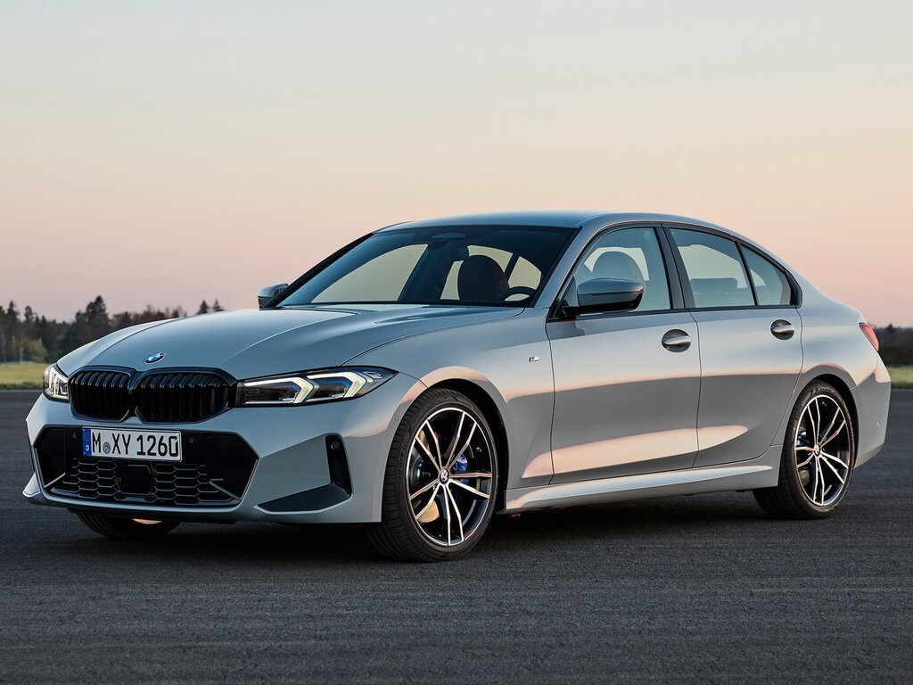
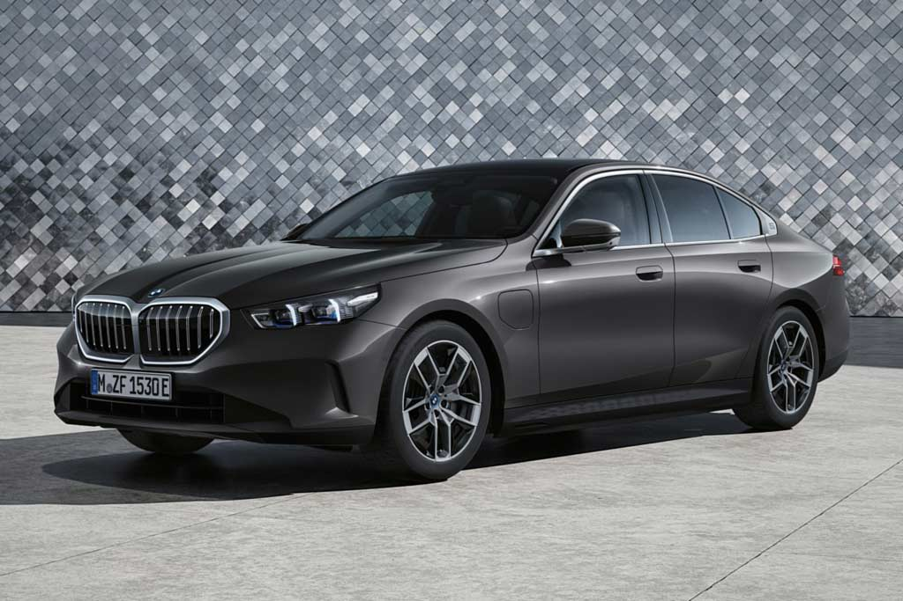
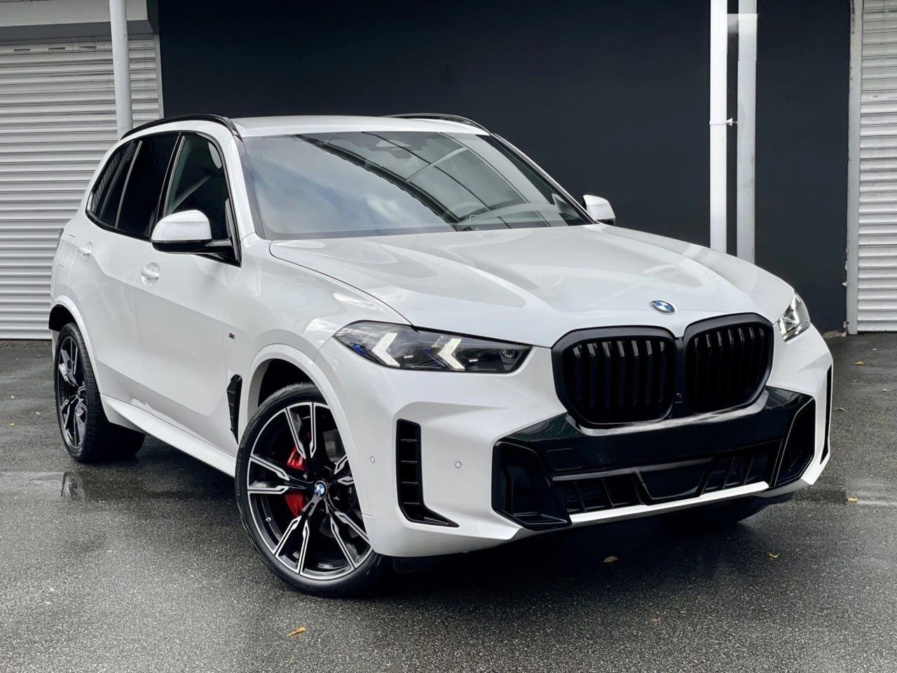

Детальный анализ характеристик и возможностей

| Характеристика | Значение |
|---|---|
| Тип двигателя | Бензиновый турбо |
| Объем двигателя | 2.0 л |
| Мощность | 258 л.с. |
| Разгон 0-100 км/ч | 5.8 сек |
| Максимальная скорость | 250 км/ч |
ABS, ESP, 6 подушек безопасности, система мониторинга слепых зон, ассистент движения по полосе, экстренное торможение.
"BMW 3 Series 2024 сочетает в себе спортивный характер и повседневную практичность. Идеальный баланс для городской эксплуатации и длительных путешествий." - Автообозреватель Auto Bild

| Параметр | Значение |
|---|---|
| Тип двигателя | Гибридный |
| Расход топлива | 6.8 л/100км |
| Коробка передач | Автоматическая 8-ступенчатая |
| Объем багажника | 520 л |

| Параметр | Значение |
|---|---|
| Длина | 4922 мм |
| Ширина | 2004 мм |
| Высота | 1745 мм |
| Колесная база | 2975 мм |
| Объем багажника | 650-1860 л |
| Характеристика | BMW 3 Series | BMW 5 Series | BMW X5 |
|---|---|---|---|
| Тип двигателя | Бензиновый | Гибридный | Дизельный/Бензиновый |
| Расход топлива (л/100км) | 7.2 | 6.8 | 8.5 |
| Тип КПП | Автоматическая | Автоматическая | Автоматическая |
| Количество передач | 8 | 8 | 8 |
| Длина (мм) | 4709 | 5060 | 4922 |
| Объем багажника (л) | 480 | 520 | 650 |
| Системы безопасности | ABS, ESP, 6 подушек | ABS, ESP, 8 подушек | ABS, ESP, 10 подушек |
| Рейтинг Euro NCAP | 5 звезд (95%) | 5 звезд (93%) | 5 звезд (89%) |
| Разгон 0-100 км/ч (сек) | 5.8 | 5.9 | 6.0 |
| Максимальная скорость (км/ч) | 250 | 250 | 230 |
| Начальная цена ($) | 45,000 | 58,000 | 65,000 |
| Wi-Fi и Bluetooth | ✓ | ✓ | ✓ |
| Тормозная система | Дисковые вентилируемые | Дисковые вентилируемые | Дисковые вентилируемые |
| Системы предотвращения столкновений | ✓ | ✓ | ✓ |
| Гарантийный срок | 3 года / 100,000 км | 3 года / 100,000 км | 3 года / 100,000 км |
Цена от: $45,000
Лучшее для: Городской эксплуатации
Расход топлива: 7.2 л/100км
Цена от: $58,000
Лучшее для: Бизнес-поездок
Расход топлива: 6.8 л/100км
Цена от: $65,000
Лучшее для: Семьи и путешествий
Расход топлива: 8.5 л/100км